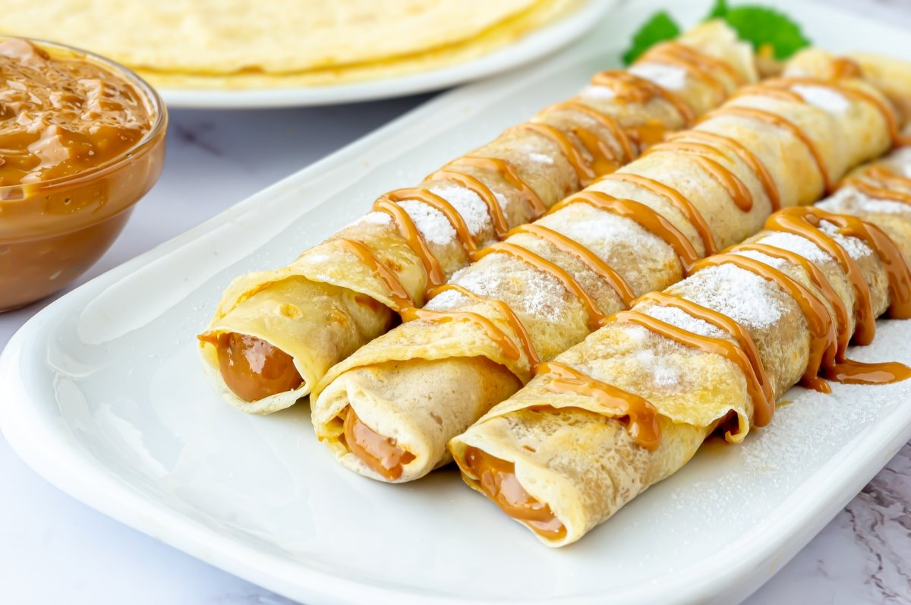

Panqueques Panini

Panqueques Caseros
Receta Panqueques
Receta especial para pasara un dia de lluvia en familia. Con nuestros
Panqueques Panini disfrutaras de un dulce y suave sabor
que te recordara a las recetas de tu abuelita.
Ingredientes
Masa
- Harina: 1 taza y media(sin polvos de hornear)
- Leche: 2 Tazas
- Huevos: 2 unidades
- Aceite o Mantequilla derretida: 1 Cucharada
- Sal: 1 Cucharadita
Cubierta
Pasos
-
Mezclar líquidos: En un bol o licuadora, bate los
huevos con la leche y la cucharada de aceite.
-
Agregar secos: Incorpora la harina poco a poco y la
pizca de sal. Bate enérgicamente con un batidor manual o procesa en la
licuadora hasta eliminar todos los grumos.
-
Reposo clave: Deja descansar la mezcla por 15 a 30
minutos en el refrigerador. Esto hidrata la harina y mejora la
elasticidad.
-
Calentar la sartén: Pon una sartén antiadherente a
fuego medio y engrásala ligeramente con una gota de aceite esparcida con
papel absorbente.
-
Cocinar: Vierte un cucharón de la mezcla en el centro.
Mueve la sartén rápidamente en círculos para cubrir toda la base con una
capa delgada.
-
Dar la vuelta: Cocina por 2 minutos hasta que los
bordes se desprendan y salgan burbujas. Da la vuelta con cuidado y
cocina por 1 minuto más. Repite con el resto de la masa.
Back to Home